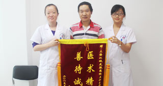

白癜风病因
- 
-
遗传学说
概述：研究认为白癜风可能是一种染色体显性遗传皮肤病。国外作者统计30%患有阳性家族史，发现单卵双生子中两个均发病。国内报道阳性家族史为3%~12%，较国外报道低。
 在线咨询
在线咨询 免费电话
免费电话-
自身免疫学说
概述：自身免疫学说与白癜风的发病关系日益受到重视。许多学者注意到患者及其家族成员合并自身免疫性疾病比率较高，常见的有甲状腺炎、甲状腺机能亢进或减退、糖尿病、慢性肾上腺机能减退、恶性贫血、风湿性关节炎、恶性黑色素瘤等。而白癜风患者的血清中，有人检出多种器官的特异性抗体，另外患自身免疫性疾病者，白癜风发病率较一般人群高10-15倍。
-
精神与神经化学学说
概述：许多临床学家发现精神因素与白癜风的发病密切相关，据估计约2/3的患者在起病或皮损发展阶段有精神创伤、过度紧张、情绪低落或沮丧。褪黑素受体活动过度可增加茶碱酶的活性，这些酶抑制黑素生化，但后期又使其生代活化，导致黑素代谢的毒性中间产物在黑素细胞内蓄积，使黑素细胞死亡，最终引白癜风。
-
黑素细胞自身破坏学说
概述：白癜风的基本病变是表皮黑素细胞部分或完全丧失功能，Lerner1971年提出这一学说，认为白癜风是因其表皮黑素细胞机能亢进，促之耗损而早期衰退，并可能是由于细胞本身合成的毒性黑素前身物质的积聚所致。实验证明某些化学物质对黑素细胞有选择性的破坏作用，使皮肤脱色。
-
微量元素缺乏学说
概述：有人提出体内铜含量降低与白癜风发病有关，但测定患者血清与毛发的铜含量似乎与一般人群无显著性差异。白癜风患者血液中及皮肤中铜或铜蓝蛋白水平降低，导致酪氨酸酶活性降低，因而影响黑色的代谢。
-
其他因素
概述：外伤包括创伤、手术、瘙痒等可诱发白癜风。某些内分泌疾病，如甲状腺机能亢进、糖尿病等，可伴发白癜风。日光曝晒易发生白癜风。